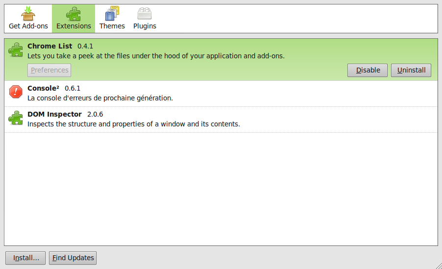
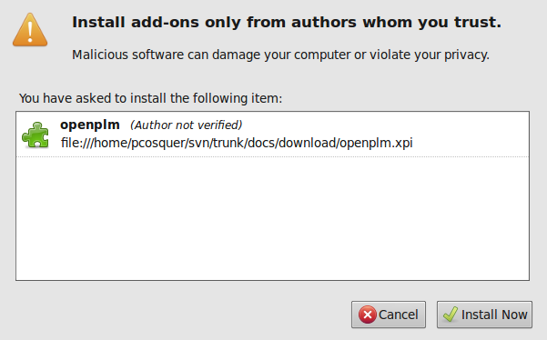
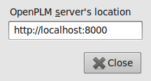
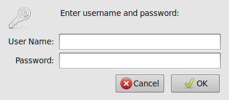
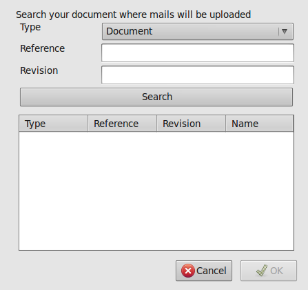
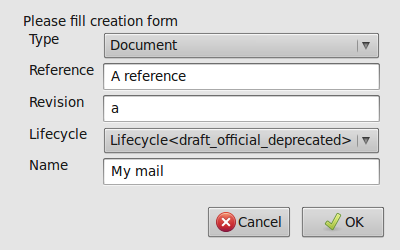

Table Of Contents
Previous topic
2.2. Plugin for OpenOffice.org/LibreOffice

2.2. Plugin for OpenOffice.org/LibreOffice
This plugin is available on the svn in the directory trunk/plugins/thunderbird.
Of course, you need Thunderbird, this plugin has been test with the versions 3.0 and 3.1.
Note
You can skip this step, download this file. Note that this file may not be up to date.
Just go in the plugins/thunderbird directory and run the command ./build.sh. This shoul create a file named openplm.xpi.
Launch Thunderbird
Launch the add-ons manager: menu Tools ‣ Add-ons. A dialog should appear:
Then click on the Install... button and select the file openplm.oxt. A dialog asking confirmation should appear:
Click on the Install Now.
Restart Thunderbird
Now, the plugin is installed. If the plugin is installed, a new submenu named OpenPLM should be present in the File menu.
First, you should specify where the server is located:
Open the dialog (menu Tools – Add-ons).
Select the OpenPLM add-ons:
Click on the Preferences button. This dialog should appear:
Enter your server’s location and close the dialog.
Before checking-in a file, you sould login. Open the configuration dialog (menu File ‣ OpenPLM ‣ Login). This dialog should appear:

Enter your username and your password and click on Ok.
You can save a mail on the server:
Select one or several mails
Click on File ‣ OpenPLM ‣ Check-in current mail. This dialog should appear:
Fill the search form and click on the Search button.
Select your document, and click on Ok
Your mail has been had.
You can create a new document from a mail:
Select one or several mails
Click on File ‣ OpenPLM ‣ Create a new document. This dialog should appear:
Fill the form
Click on Ok to validate the creation.
Your document has been created.
{kind=link}
{kind=link}
{kind=link}